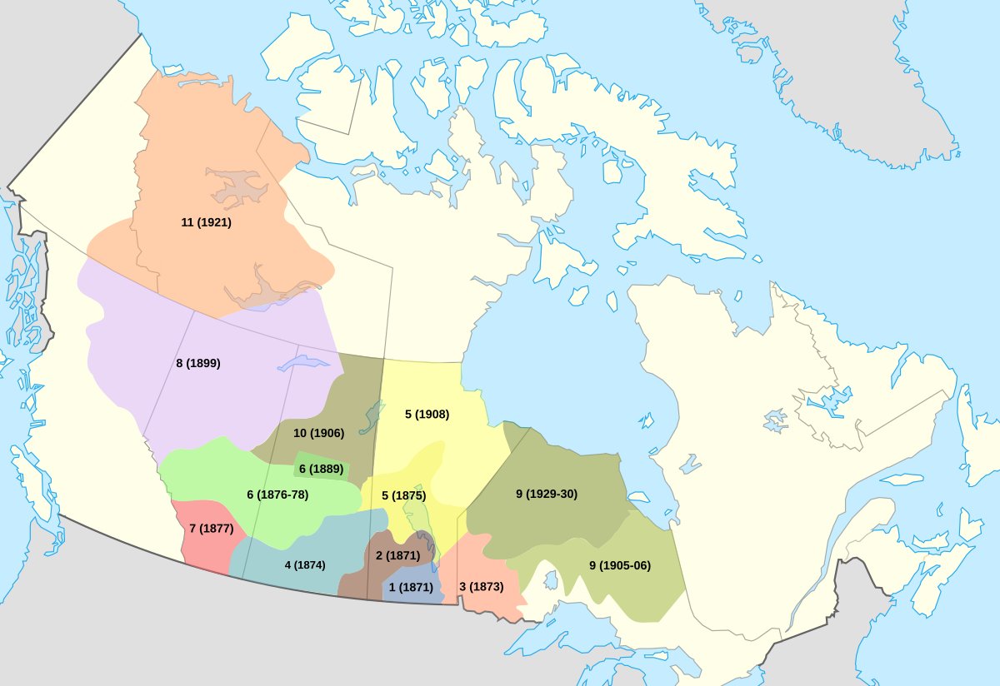

Image of a Numbered Treaties Map
Treaty 1 was signed in 1871 between the Crown and the Anishinabe and Swampy Cree peoples. It is the first of the Numbered treaties which is a series of agreements between the Crown and Indigenous peoples that took place between 1871 and 1921. It was signed on August 3rd, 1871.
Before Canada became a country (in 1867), the Hudson's Bay controlled a lot of land, including what is now Manitoba. After Canada became a country, the government took over that land without the permission of the Indigenous peoples, and many of them did not agree with this. The Metis (a group of people with both Indigenous and European roots) fought back.
What are the historic terms of the treaty?
What makes this Treaty different from other Treaties in Canada?
Treaty 1 is very important as it is the first of the numbered treaties between the Canadian Government and the Indigenous people. It marks the beginning of land agreements in Canada, and like most treaties made in Canada, it didn’t honor most of its agreements.
It was made between the Canadian government and the Anishinaabe (Saulteaux) and Swampy Cree peoples in southern Manitoba.
How is it being implemented today?
Today, Treaty 1 is being implemented by helping Indigenous communities become more independent and grow economically. This includes creating urban reserves, like the Kapyong Urban Reserve in Winnipeg, which gives communities land in the city to use for businesses and services. For example, the Long Plain First Nation Gas Station helps the community make money and create jobs. These projects help Indigenous communities take control of their land, build better futures, and fix past wrongs by making sure the promises of the treaty are better kept.